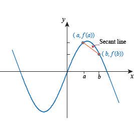
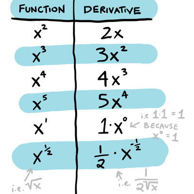
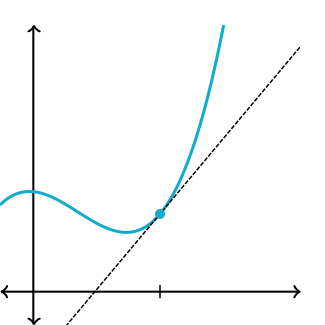

Secant Line
We find secant line by taking two points from the graph then find the slope with y2-y1 / x2-x1. Then use one of them to find the y-int.
m = y2-y1 / x2-x1
y-int = y-mx

Mr. Ross
Mr. Williamson
Mr. Ortega
Alec G
Rick H
Susie Q
Yifan Y
We find secant line by taking two points from the graph then find the slope with y2-y1 / x2-x1. Then use one of them to find the y-int.
m = y2-y1 / x2-x1
y-int = y-mx

The derivative is a function that measures the rate of changes at one point on the graph. It could quickly find by using the power rule.

To find tangent line, you will need to find the slope with f'(x), then plug in the slope to point-slope form.
Point-slope form: y-y1 = m(x-x1)
